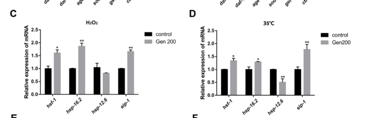

C. elegans HSP-12.6 is a 12.6 kDa member of the small heat shock protein (sHSP/HSP20) family. It contains a conserved alpha-crystallin domain but has the shortest N- and C-terminal regions of any known sHSP (PMID:9139746). Unlike typical sHSPs, HSP-12.6 does not form large oligomeric complexes and behaves as a monomer in solution (PMID:9139746). Critically, HSP-12.6 does not function as a molecular chaperone in vitro, being unable to prevent thermally induced aggregation of test substrates (PMID:9139746). Expression is limited to the first larval stage and is not significantly upregulated by a wide range of stressors (PMID:9139746). HSP-12.6 self-associates (identical protein binding) as demonstrated by physical interaction with itself (PMID:9139746). Immunohistochemical studies show HSP-12.6 is cytoplasmic and associated with reproductive tissues including spermatheca (PMID:11001875). Despite lacking in vitro chaperone activity, C. elegans 12 kDa sHSPs play in vivo roles in dauer formation, longevity, and reproduction. Falcon deep research further characterizes hsp-12.6 as a DAF-16/FOXO- and HSF-1-linked longevity/stress effector: it is upregulated when daf-2 activity is reduced and downregulated when daf-16 activity is reduced, is highly expressed in dauer, and carries upstream consensus DAF-16 and HSF-1 binding sites. In long-lived daf-2(e1370) animals, hsp-12.6 RNAi reduces the extended lifespan by ~25%, while overexpression extends lifespan by ~2 days, and hsp-12.6 RNAi accelerates polyglutamine aggregation in vivo, indicating context-dependent in vivo protective activity not captured by the standard in vitro citrate synthase aggregation assay. A translational reporter shows expression in body wall muscle, vulval/uterine muscle, neuronal processes, and intestine, with a punctate muscle pattern that does not co-localize with mitochondria.
| GO Term | Evidence | Action | Reason |
|---|---|---|---|
|
GO:0005737
cytoplasm
|
IBA
GO_REF:0000033 |
ACCEPT |
Summary: IBA annotation for cytoplasmic localization, inferred phylogenetically from a large set of sHSP orthologs across fly, worm, mouse, rat, human, and zebrafish. Consistent with direct IDA evidence for cytoplasmic localization from immunohistochemistry (PMID:11001875).
Reason: Cytoplasmic localization is well-established for sHSP family proteins and directly confirmed for HSP-12.6 by IDA evidence (PMID:11001875). The IBA inference is phylogenetically sound and experimentally validated.
|
|
GO:0005634
nucleus
|
IBA
GO_REF:0000033 |
KEEP AS NON CORE |
Summary: IBA annotation for nuclear localization based on phylogenetic inference from mammalian sHSP orthologs (CRYAA, CRYAB, HSP27/HSPB1) that have been reported to translocate to the nucleus under stress conditions. Nuclear localization has not been specifically demonstrated for C. elegans HSP-12.6.
Reason: Nuclear localization has been reported for some mammalian sHSP orthologs. The IBA inference is phylogenetically supported but represents a secondary or stress-dependent localization. Not the primary compartment for HSP-12.6 function. Retained as non-core.
|
|
GO:0009408
response to heat
|
IBA
GO_REF:0000033 |
MARK AS OVER ANNOTATED |
Summary: IBA annotation for involvement in heat stress response, inferred phylogenetically from multiple sHSP orthologs. HSP-12.6 is a member of the sHSP/HSP20 family. However, Leroux et al. 1997 (PMID:9139746) reported that HSP-12.6 expression is not significantly upregulated by a wide range of stressors, which calls into question a strong role in heat stress response for this particular sHSP. Nevertheless, the IBA inference from the broader sHSP family is phylogenetically sound and the protein retains an alpha-crystallin domain characteristic of heat stress responders.
Reason: This "response to heat" annotation over-represents an acute heat-stress role
that HSP-12.6 does not have. Unlike canonical heat-inducible sHSPs (e.g. the
hsp-16 genes), HSP-12.6 is constitutively expressed and is not heat-inducible:
its expression is not significantly upregulated by a wide range of stressors
(PMID:9139746), and the falcon deep research notes it is often described as
constitutively expressed and not strongly heat-inducible. Far from being
induced by heat, a 2023 study found hsp-12.6 mRNA was actually downregulated
(~49.4% decrease under 35C heat stress) rather than induced. Its in vivo
regulation and function are better described through DAF-16/HSF-1 longevity
signaling than through an acute heat-shock response. The IBA inference is a
phylogenetic carry-over from the broader sHSP family that does not hold for
this atypical member, so "response to heat" is an over-annotation.
Supporting Evidence:
PMID:9139746
Expression of HSP12.6 is limited to the first larval stage of C. elegans and is not significantly up-regulated by a wide range of stressors.
file:worm/hsp-12.6/hsp-12.6-deep-research-falcon.md
hsp-12.6 is often described as constitutively expressed and not strongly heat-inducible
file:worm/hsp-12.6/hsp-12.6-deep-research-falcon.md
A 49.4% decrease under 35°C heat stress (p < 0.01)
|
|
GO:0042026
protein refolding
|
IBA
GO_REF:0000033 |
REMOVE |
Summary: IBA annotation for protein refolding, inferred phylogenetically primarily from Drosophila sHSP orthologs. However, HSP-12.6 has been experimentally demonstrated to lack chaperone activity in vitro (PMID:9139746). Leroux et al. showed that HSP-12.6 does not function as a molecular chaperone in vitro, being unable to prevent thermally induced aggregation of test substrates. There is also an explicit NOT annotation for GO:0051082 (unfolded protein binding) from the same publication. This annotation is therefore incorrect for HSP-12.6.
Reason: HSP-12.6 has been directly demonstrated to lack chaperone activity in vitro
(PMID:9139746). It is monomeric rather than forming the large oligomeric
complexes required for holdase function. The IBA inference from Drosophila sHSP
orthologs does not apply because HSP-12.6 has divergent structural properties
(shortest N- and C-terminal regions of any known sHSP, monomeric) that preclude
chaperone activity. The NOT annotation for GO:0051082 from the same publication
confirms this. The falcon deep research independently corroborates the absence
of canonical holdase activity: recombinant HSP-12.6 failed to prevent thermally
induced citrate synthase aggregation (reported at 45C), and the monomeric
behaviour plus truncated terminal regions are discussed as the mechanistic
reason it does not form the higher-order assemblies associated with classical
in vitro sHSP holdase activity. Note that falcon also flags reproducible in vivo
protective roles (proteostasis/longevity) that are not captured by this in vitro
refolding assay; these are addressed under the heat/longevity annotations rather
than via a protein refolding (GO:0042026) term.
Supporting Evidence:
PMID:9139746
HSP12.6 does not function as a molecular chaperone in vitro, since it is unable to prevent the thermally induced aggregation of a test substrate.
file:worm/hsp-12.6/hsp-12.6-deep-research-falcon.md
did not prevent thermally induced citrate synthase aggregation (reported at **45°C**)
file:worm/hsp-12.6/hsp-12.6-deep-research-falcon.md
the monomeric behavior and truncation of terminal regions are discussed as plausible reasons that HSP-12.6 does not form the higher-order assemblies often associated with classical in vitro sHSP holdase activity
|
|
GO:0005737
cytoplasm
|
IDA
PMID:11001875 Association of several small heat-shock proteins with reprod... |
ACCEPT |
Summary: IDA annotation for cytoplasmic localization based on Ding and Candido 2000 (PMID:11001875). Immunohistochemical analysis showed HSP-12.6 expression in reproductive tissues including spermatheca. This provides direct experimental evidence for cytoplasmic localization.
Reason: Direct experimental evidence from immunohistochemistry in C. elegans
(PMID:11001875) confirms cytoplasmic localization of HSP-12.6. This is a
well-supported cellular component annotation. The falcon deep research adds
independent reporter-based support: a phsp-12.6::HSP-12.6::DSRED2 translational
fusion shows a punctate pattern in body muscle that does NOT co-localize with a
mitochondrial GFP reporter, leading the authors to conclude HSP-12.6 is not
mitochondrial (consistent with cytoplasmic localization).
Supporting Evidence:
PMID:11001875
the tissues expressing the greatest number of smHSPs are vulva (HSP12s, HSP43 and, under stress, HSP16s) and spermatheca (HSP12s, HSP25, HSP43 and, under stress, HSP16s).
file:worm/hsp-12.6/hsp-12.6-deep-research-falcon.md
is not mitochondrial in muscle cells
file:worm/hsp-12.6/hsp-12.6-deep-research-falcon.md
more consistent with non-mitochondrial/cytoplasmic localization in that context
|
|
GO:0042802
identical protein binding
|
IPI
PMID:9139746 Unique structural features of a novel class of small heat sh... |
ACCEPT |
Summary: IPI annotation for identical protein binding based on Leroux et al. 1997 (PMID:9139746). The with/from field indicates WB:WBGene00002013, which is hsp-12.6 itself, indicating self-association. Cross-linking and sedimentation velocity analyses from the same study characterized the oligomeric state of HSP-12.6, finding it to be monomeric in solution, though self-interaction may occur transiently.
Reason: The IPI annotation with the protein itself as the interacting partner
indicates experimentally demonstrated self-association (PMID:9139746).
While HSP-12.6 is predominantly monomeric, the cross-linking experiments
would detect transient self-interactions. This is a valid molecular function
annotation. The falcon deep research corroborates the unusual monomeric state:
within the 12-kDa sHSP family, HSP-12.6 is reported as monomeric by
sedimentation velocity and cross-linking, contrasting with the common
oligomeric nature of many sHSPs. This means any identical protein binding is
weak/transient rather than the stable higher-order oligomerization typical of
chaperone-active sHSPs.
Supporting Evidence:
PMID:9139746
Cross-linking and sedimentation velocity analyses indicate that the recombinant HSP12.6 is monomeric
file:worm/hsp-12.6/hsp-12.6-deep-research-falcon.md
HSP-12.6 is reported as monomeric** by sedimentation velocity and cross-linking, contrasting with the common oligomeric nature of many sHSPs
|
|
GO:0051082
unfolded protein binding
|
IDA
NOT
PMID:9139746 Unique structural features of a novel class of small heat sh... |
ACCEPT |
Summary: NOT annotation (negated IDA) for unfolded protein binding based on Leroux et al. 1997 (PMID:9139746). The study directly tested recombinant HSP-12.6 for chaperone activity and found it unable to prevent thermally induced aggregation of test substrates. This negative result is consistent with the structural analysis showing HSP-12.6 is monomeric. GO:0051082 is proposed for obsoletion, but the negation is still informative as it documents the absence of holdase activity.
Reason: This NOT annotation is an important negative result directly demonstrated
by experimental evidence (PMID:9139746). HSP-12.6 lacks chaperone activity
and does not bind unfolded proteins in a functional sense despite being an
sHSP family member. The negation correctly documents this experimentally
determined absence of function. The falcon deep research independently
summarizes the same negative result (no detectable canonical in vitro
chaperone/holdase activity in the standard citrate synthase aggregation
assay), supporting retention of this NOT annotation.
Supporting Evidence:
PMID:9139746
HSP12.6 does not function as a molecular chaperone in vitro, since it is unable to prevent the thermally induced aggregation of a test substrate.
file:worm/hsp-12.6/hsp-12.6-deep-research-falcon.md
lack detectable chaperone/holdase activity in a standard citrate synthase aggregation assay
|
The research report should be a detailed narrative explaining the function, biological processes, and localization of the gene product. Citations should be given for all claims.
You should prioritize authoritative reviews and primary scientific literature when conducting research. You can supplement
this with annotations you find in gene/protein databases, but these can be outdated or inaccurate.
We are specifically interested in the primary function of the gene - for enzymes, what reaction is catalyzed, and what is the substrate specificity? For transporters, what is the substrate? For structural proteins or adapters, what is the broader structural role? For signaling molecules, what is the role in the pathway.
We are interested in where in or outside the cell the gene product carries out its function.
We are also interested in the signaling or biochemical pathways in which the gene functions. We are less interested in broad pleiotropic effects, except where these elucidate the precise role.
Include evidence where possible. We are interested in both experimental evidence as well as inference from structure, evolution, or bioinformatic analysis. Precise studies should be prioritized over high-throughput, where available.
The evidence synthesized here concerns the Caenorhabditis elegans gene hsp-12.6, encoding a small heat shock protein (sHSP; HSP20/α-crystallin family) consistent with the UniProt description provided by the user. In the retrieved literature, “hsp-12.6” also appears in other nematodes (e.g., parasites), but those are not used to infer C. elegans function. A comparative genomics resource explicitly refers to “C. elegans hsp-12.6 (F38E11.2)”, supporting the locus mapping used in this report. (ramsay2012investigatingtherolea pages 46-54)
Small heat shock proteins are ubiquitous ATP-independent molecular chaperones that bind non-native/unfolding proteins to reduce irreversible aggregation and can cooperate with ATP-dependent chaperone systems for later refolding/disaggregation. A hallmark is a conserved α-crystallin domain (~100 aa), typically flanked by variable N- and C-terminal regions; many sHSPs form dynamic oligomers with subunit exchange, and oligomeric transitions can regulate substrate binding. (nakamoto2007thesmallheat pages 1-2, nakamoto2007thesmallheat pages 2-4)
The α-crystallin domain adopts an immunoglobulin-like β-sandwich fold. The N-terminal region is often implicated in substrate binding, while N- and C-terminal extensions commonly contribute to oligomer assembly and regulation of activity (e.g., via temperature/phosphorylation effects that expose hydrophobic binding sites). (nakamoto2007thesmallheat pages 2-4)
In addition to protein quality control, sHSPs are described as amphitropic proteins that can associate with membranes without transmembrane helices, suggesting potential roles in membrane quality control/stress sensing. (nakamoto2007thesmallheat pages 1-2, nakamoto2007thesmallheat pages 9-10)
The C. elegans 12-kDa sHSP family (including HSP-12.6) has atypical architecture: the proteins have very short N-termini and largely lack the polar C-terminal tail typical of many chaperone-active sHSPs. In this family, HSP-12.6 is reported as monomeric by sedimentation velocity and cross-linking, contrasting with the common oligomeric nature of many sHSPs. (ramsay2012investigatingtherole pages 37-42, nakamoto2007thesmallheat pages 2-4)
In vitro, recombinant HSP-12.6 was reported to lack detectable chaperone/holdase activity in a standard citrate synthase aggregation assay, i.e., it did not prevent thermally induced citrate synthase aggregation (reported at 45°C). This negative result is frequently interpreted as “no canonical in vitro chaperone activity” in that assay context. (ramsay2012investigatingtherole pages 42-46, ramsay2012investigatingtherole pages 37-42)
Mechanistically, the monomeric behavior and truncation of terminal regions are discussed as plausible reasons that HSP-12.6 does not form the higher-order assemblies often associated with classical in vitro sHSP holdase activity. (ramsay2012investigatingtherole pages 42-46, nakamoto2007thesmallheat pages 2-4)
Despite weak/absent activity in one in vitro assay, in vivo data support a specialized protective role:
Interpretation: current evidence is most consistent with context-dependent, in vivo protective activity (proteostasis/longevity), rather than a broadly acting canonical “holdase” detected by standard in vitro aggregation assays. (ramsay2012investigatingtherole pages 42-46)
A translational reporter phsp-12.6::HSP-12.6::DSRED2 shows expression in multiple tissues including body wall muscle, vulval (and uterine) muscles, neuronal processes/axons, and intestinal cells; expression is detectable under both non-heat-shock and heat-shock conditions in those experiments. (ramsay2012investigatingtherolea pages 46-54, ramsay2012investigatingtherole pages 82-86)
In body muscle, the same translational fusion exhibited a punctate pattern. Co-localization experiments with a mitochondrial GFP reporter showed no co-localization, leading to the conclusion that HSP-12.6 is not mitochondrial in muscle cells (and is more consistent with non-mitochondrial/cytoplasmic localization in that context). (ramsay2012investigatingtherolea pages 46-54)
Multiple datasets summarized in the retrieved evidence place hsp-12.6 as a stress/longevity gene regulated by IIS:
Promoter analysis in the same body of evidence reports upstream sequences matching consensus DAF-16 and HSF-1 binding sites, consistent with direct/indirect transcriptional control by these factors. (ramsay2012investigatingtherole pages 79-82)
The retrieved evidence supports that hsp-12.6 participates in HSF-1-linked longevity programs (see phenotypes below), but also notes that hsp-12.6 is often described as constitutively expressed and not strongly heat-inducible (at least under certain conditions and in certain developmental stages), contrasting with strongly heat-inducible small HSPs like hsp-16 genes. (ramsay2012investigatingtherole pages 37-42, ramsay2012investigatingtherole pages 82-86)
Overexpression using phsp-12.6::HSP-12.6::DSRED2 was reported to extend lifespan by ~2 days in the experiments summarized in the retrieved evidence. (ramsay2012investigatingtherolea pages 79-82, ramsay2012investigatingtherole pages 79-82)
A 2023 peer-reviewed study (Antioxidants; publication date: Jan 2023) tested 200 µM genistein in L4 worms under oxidative stress (H2O2) and heat stress (35°C). For hsp-12.6 mRNA, genistein caused:
This provides a recent quantitative data point showing that hsp-12.6 can be downregulated in a heat-stress condition where other stress genes are induced, reinforcing that hsp-12.6 is not simply a generic “heat-inducible HSP” marker in all contexts. URL/DOI: https://doi.org/10.3390/antiox12010125. (zhang2023genisteinpromotesantiheat pages 8-11, zhang2023genisteinpromotesantiheat media 82792b6c)
A 2023 peer-reviewed study (Experimental and Therapeutic Medicine; publication date: Jul 2023) used an Aβ transgenic model (CL4176) and reported that an ethyl acetate extract of Gastrodia elata (EEGE) altered expression of stress/longevity-related genes; hsp-12.6 is reported as upregulated (with P < 0.05) and qPCR validation matched the RNA-seq direction, though explicit fold-changes for hsp-12.6 were not present in the retrieved excerpt. URL/DOI: https://doi.org/10.3892/etm.2023.12104. (shi2023ethylacetateextract pages 7-10)
A 2024 peer-reviewed eLife study (publication date: Jun 2024) performed neuron-specific transcriptomics to understand IIS/FOXO effects in aged animals. In their neuron-specific comparisons, the hsp-12.6-containing cluster is identified among daf-2/FOXO-associated neuronal genes; a listed small-HSP-domain gene entry corresponding to hsp-12.6 shows log2 fold-change = 1.94 with adjusted p = 7.33×10−6 in a daf-2 vs daf-16;daf-2 neuronal comparison, supporting significant neuronal upregulation in the daf-2/FOXO context. URL/DOI: https://doi.org/10.7554/elife.95621.4. (weng2024theneuronspecificiisfoxo pages 10-12)
The dominant conceptual model from authoritative sHSP literature is that sHSPs act as ATP-independent chaperones whose activity is tied to dynamic oligomerization and exposure of hydrophobic client-binding surfaces. (nakamoto2007thesmallheat pages 1-2, nakamoto2007thesmallheat pages 2-4)
C. elegans HSP-12.6 appears to be an outlier within this family: it is described as monomeric with truncated terminal regions and lacks detectable citrate synthase holdase activity in vitro, yet it has reproducible in vivo roles in proteostasis and longevity downstream of IIS/DAF-16 and HSF-1-associated programs. (ramsay2012investigatingtherole pages 37-42, ramsay2012investigatingtherole pages 42-46, ramsay2012investigatingtherolea pages 46-54)
A plausible synthesis is that HSP-12.6 provides client- or context-specific protection (e.g., specific native clients in particular tissues such as muscle/neurons, or stress-state-specific functions such as dauer/IIS programs) that is not well captured by standard in vitro aggregation assays. This is consistent with the broader caution in the sHSP field that in vitro assays may not capture all biologically relevant sHSP functions, especially for divergent family members. (nakamoto2007thesmallheat pages 2-4, ramsay2012investigatingtherole pages 42-46)
The following table consolidates major claims, conditions, quantitative values, and citations:
| Aspect | Key claim | Experimental system/conditions | Quantitative/statistical details | Source (author year) and DOI/URL | Evidence citation id |
|---|---|---|---|---|---|
| Function | HSP-12.6 lacks detectable canonical in vitro chaperone activity against thermally unfolded citrate synthase | Recombinant C. elegans HSP-12.6 tested in citrate synthase aggregation-prevention assays | Failed to prevent citrate synthase aggregation at 45°C; interpreted as no detectable in vitro chaperone/holdase activity in that assay | Ramsay 2012 summarizing Leroux et al. 1997a; review context consistent with Nakamoto & Vígh 2007. URL: https://doi.org/10.1007/s00018-006-6321-2 | (ramsay2012investigatingtherole pages 42-46, ramsay2012investigatingtherolea pages 42-46) |
| Function/structure | HSP-12.6 is structurally atypical among sHSPs, with very short terminal regions and monomeric behavior | Biophysical characterization discussed for the C. elegans 12-kDa sHSP family | Reported as monomeric by sedimentation velocity and cross-linking analyses; contrasts with many oligomeric sHSPs | Ramsay 2012; Nakamoto & Vígh 2007. URL: https://doi.org/10.1007/s00018-006-6321-2 | (nakamoto2007thesmallheat pages 2-4, ramsay2012investigatingtherole pages 37-42) |
| Localization | Translational reporter indicates expression in muscle, neurons, vulva, intestine, and reproductive muscle-associated tissues | phsp-12.6::HSP-12.6::DSRED2 translational fusion in C. elegans under basal and heat-shock conditions | Expression observed in body muscle, vulval and uterine muscles, anterior/posterior axons, intestinal cells; constitutive expression also reported at 20°C | Ramsay 2012 | (ramsay2012investigatingtherolea pages 46-54, ramsay2012investigatingtherole pages 82-86) |
| Localization | Reporter signal in body muscle is punctate but does not colocalize with mitochondria | phsp-12.6::HSP-12.6::DSRED2 compared with mitochondrial GFP reporter in muscle cells | No colocalization detected; authors concluded HSP-12.6 is not localized to mitochondria in muscle cells | Ramsay 2012 | (ramsay2012investigatingtherolea pages 46-54) |
| Expression regulation | hsp-12.6 is a DAF-16/FOXO- and HSF-1-linked longevity/stress gene, strongly associated with dauer and reduced IIS | Genetic and transcriptomic analyses in daf-2 and daf-16 backgrounds; promoter motif analysis | Reported as highly expressed in dauer; upregulated when daf-2 activity is reduced and downregulated when daf-16 activity is reduced; upstream consensus DAF-16 and HSF-1 sites present | Ramsay 2012; background from DAF-16/HSF-1 literature summarized therein | (ramsay2012investigatingtherolea pages 46-54, ramsay2012investigatingtherole pages 79-82) |
| Expression regulation | Unlike classic heat-inducible sHSPs, hsp-12.6 is often described as constitutive and not strongly stress-induced in standard assays | Western blot and reporter-based observations in C. elegans L1 larvae and adults | No significant induction reported across multiple stressors in L1 larvae; constitutive reporter expression at 20°C | Ramsay 2012 | (ramsay2012investigatingtherole pages 37-42, ramsay2012investigatingtherole pages 82-86) |
| Phenotype | hsp-12.6 contributes to daf-2 longevity; RNAi reduces the long-lived phenotype of daf-2 mutants | RNAi knockdown in daf-2(e1370) and other IIS mutant backgrounds | In daf-2(e1370) at 20°C, hsp-12.6(RNAi) reduced extended lifespan by approximately 25% | Ramsay 2012 | (ramsay2012investigatingtherolea pages 46-54) |
| Phenotype | hsp-12.6 overexpression modestly extends lifespan | phsp-12.6::HSP-12.6::DSRED2 overexpression strain | Lifespan extension of about 2 days relative to controls | Ramsay 2012 | (ramsay2012investigatingtherolea pages 79-82, ramsay2012investigatingtherole pages 79-82) |
| Phenotype/proteostasis | Despite weak in vitro chaperone evidence, hsp-12.6 has in vivo protective roles in proteostasis | RNAi studies in polyQ aggregation/longevity contexts | RNAi accelerates polyQ aggregation; lifespan effects are small but statistically significant in several backgrounds | Ramsay 2012 | (ramsay2012investigatingtherole pages 42-46, ramsay2012investigatingtherolea pages 42-46) |
| Recent regulation (2023) | Genistein downregulates hsp-12.6 under heat stress but not oxidative stress | L4 worms treated with 200 µM genistein; qPCR under 35°C heat stress or H2O2 oxidative stress | At 35°C, hsp-12.6 mRNA decreased by 49.4% (p < 0.01); under H2O2, no significant change reported | Zhang et al. 2023, Antioxidants, published Jan 2023. DOI/URL: https://doi.org/10.3390/antiox12010125 | (zhang2023genisteinpromotesantiheat pages 8-11, zhang2023genisteinpromotesantiheat pages 11-13) |
| Recent regulation (2023) | EEGE upregulates hsp-12.6 in an Aβ transgenic worm model | CL4176 C. elegans treated with ethyl acetate extract of Gastrodia elata (EEGE); RNA-seq with qPCR validation | hsp-12.6 reported upregulated with P < 0.05; exact fold-change not provided in extracted text | Shi et al. 2023, Experimental and Therapeutic Medicine, published Jul 2023. DOI/URL: https://doi.org/10.3892/etm.2023.12104 | (shi2023ethylacetateextract pages 7-10) |
| Recent omics (2024) | hsp-12.6 is among neuronal genes upregulated by daf-2/FOXO signaling in aged animals | Neuron-specific transcriptomics comparing daf-2 vs daf-16;daf-2 neurons in aged C. elegans | log2FC = 1.94; adjusted p = 7.33E-06 | Weng et al. 2024, eLife, published Jun 2024. DOI/URL: https://doi.org/10.7554/elife.95621.4 | (weng2024theneuronspecificiisfoxo pages 10-12) |
Table: This table summarizes experimentally supported findings for C. elegans hsp-12.6, including molecular function, localization, pathway regulation, phenotypic effects, and recent 2023-2024 omics results. It highlights both classic evidence and newer quantitative studies relevant for functional annotation.
A cropped panel from Zhang et al. 2023 Figure 8 showing the hsp-12.6 qPCR under H2O2 and 35°C conditions is available and supports the reported downregulation under heat stress with genistein. (zhang2023genisteinpromotesantiheat media 82792b6c)
References
(ramsay2012investigatingtherolea pages 46-54): LF Ramsay. Investigating the role of the small heat shock protein, hsp-12.6, in longevity in caenorhabditis elegans. Unknown journal, 2012.
(nakamoto2007thesmallheat pages 1-2): Hitoshi Nakamoto and L. Vígh. The small heat shock proteins and their clients. Cellular and Molecular Life Sciences, 64:294-306, Feb 2007. URL: https://doi.org/10.1007/s00018-006-6321-2, doi:10.1007/s00018-006-6321-2. This article has 426 citations and is from a domain leading peer-reviewed journal.
(nakamoto2007thesmallheat pages 2-4): Hitoshi Nakamoto and L. Vígh. The small heat shock proteins and their clients. Cellular and Molecular Life Sciences, 64:294-306, Feb 2007. URL: https://doi.org/10.1007/s00018-006-6321-2, doi:10.1007/s00018-006-6321-2. This article has 426 citations and is from a domain leading peer-reviewed journal.
(nakamoto2007thesmallheat pages 9-10): Hitoshi Nakamoto and L. Vígh. The small heat shock proteins and their clients. Cellular and Molecular Life Sciences, 64:294-306, Feb 2007. URL: https://doi.org/10.1007/s00018-006-6321-2, doi:10.1007/s00018-006-6321-2. This article has 426 citations and is from a domain leading peer-reviewed journal.
(ramsay2012investigatingtherole pages 37-42): LF Ramsay. Investigating the role of the small heat shock protein, hsp-12.6, in longevity in caenorhabditis elegans. Unknown journal, 2012.
(ramsay2012investigatingtherole pages 42-46): LF Ramsay. Investigating the role of the small heat shock protein, hsp-12.6, in longevity in caenorhabditis elegans. Unknown journal, 2012.
(ramsay2012investigatingtherolea pages 42-46): LF Ramsay. Investigating the role of the small heat shock protein, hsp-12.6, in longevity in caenorhabditis elegans. Unknown journal, 2012.
(ramsay2012investigatingtherole pages 82-86): LF Ramsay. Investigating the role of the small heat shock protein, hsp-12.6, in longevity in caenorhabditis elegans. Unknown journal, 2012.
(ramsay2012investigatingtherole pages 79-82): LF Ramsay. Investigating the role of the small heat shock protein, hsp-12.6, in longevity in caenorhabditis elegans. Unknown journal, 2012.
(ramsay2012investigatingtherolea pages 79-82): LF Ramsay. Investigating the role of the small heat shock protein, hsp-12.6, in longevity in caenorhabditis elegans. Unknown journal, 2012.
(zhang2023genisteinpromotesantiheat pages 8-11): Sai-Ya Zhang, Zi-Chen Qin, Yi-Yang Sun, Yu-Si Chen, Wen-Bo Chen, Hong-Gang Wang, Di An, Dan Sun, and Yan-Qiang Liu. Genistein promotes anti-heat stress and antioxidant effects via the coordinated regulation of iis, hsp, mapk, dr, and mitochondrial pathways in caenorhabditis elegans. Antioxidants, 12:125, Jan 2023. URL: https://doi.org/10.3390/antiox12010125, doi:10.3390/antiox12010125. This article has 20 citations.
(zhang2023genisteinpromotesantiheat media 82792b6c): Sai-Ya Zhang, Zi-Chen Qin, Yi-Yang Sun, Yu-Si Chen, Wen-Bo Chen, Hong-Gang Wang, Di An, Dan Sun, and Yan-Qiang Liu. Genistein promotes anti-heat stress and antioxidant effects via the coordinated regulation of iis, hsp, mapk, dr, and mitochondrial pathways in caenorhabditis elegans. Antioxidants, 12:125, Jan 2023. URL: https://doi.org/10.3390/antiox12010125, doi:10.3390/antiox12010125. This article has 20 citations.
(shi2023ethylacetateextract pages 7-10): Xiongfei Shi, Xingzhi Yu, Liping Yang, and Xiaohua Duan. Ethyl acetate extract of gastrodia elata protects caenorhabditis elegans from oxidative stress and amyloid β peptide toxicity. Experimental and Therapeutic Medicine, Jul 2023. URL: https://doi.org/10.3892/etm.2023.12104, doi:10.3892/etm.2023.12104. This article has 8 citations and is from a peer-reviewed journal.
(weng2024theneuronspecificiisfoxo pages 10-12): Yifei Weng, Shiyi Zhou, Katherine Morillo, Rachel Kaletsky, Sarah Lin, and Coleen T Murphy. The neuron-specific iis/foxo transcriptome in aged animals reveals regulatory mechanisms of cognitive aging. eLife, Jun 2024. URL: https://doi.org/10.7554/elife.95621.4, doi:10.7554/elife.95621.4. This article has 18 citations and is from a domain leading peer-reviewed journal.
(zhang2023genisteinpromotesantiheat pages 11-13): Sai-Ya Zhang, Zi-Chen Qin, Yi-Yang Sun, Yu-Si Chen, Wen-Bo Chen, Hong-Gang Wang, Di An, Dan Sun, and Yan-Qiang Liu. Genistein promotes anti-heat stress and antioxidant effects via the coordinated regulation of iis, hsp, mapk, dr, and mitochondrial pathways in caenorhabditis elegans. Antioxidants, 12:125, Jan 2023. URL: https://doi.org/10.3390/antiox12010125, doi:10.3390/antiox12010125. This article has 20 citations.

id: G5EE36
gene_symbol: hsp-12.6
product_type: PROTEIN
status: IN_PROGRESS
taxon:
id: NCBITaxon:6239
label: Caenorhabditis elegans
description: >-
C. elegans HSP-12.6 is a 12.6 kDa member of the small heat shock protein (sHSP/HSP20)
family. It contains a conserved alpha-crystallin domain but has the shortest N- and
C-terminal regions of any known sHSP (PMID:9139746). Unlike typical sHSPs, HSP-12.6
does not form large oligomeric complexes and behaves as a monomer in solution
(PMID:9139746). Critically, HSP-12.6 does not function as a molecular chaperone in
vitro, being unable to prevent thermally induced aggregation of test substrates
(PMID:9139746). Expression is limited to the first larval stage and is not
significantly upregulated by a wide range of stressors (PMID:9139746). HSP-12.6
self-associates (identical protein binding) as demonstrated by physical interaction
with itself (PMID:9139746). Immunohistochemical studies show HSP-12.6 is cytoplasmic
and associated with reproductive tissues including spermatheca (PMID:11001875).
Despite lacking in vitro chaperone activity, C. elegans 12 kDa sHSPs play in vivo
roles in dauer formation, longevity, and reproduction. Falcon deep research further
characterizes hsp-12.6 as a DAF-16/FOXO- and HSF-1-linked longevity/stress effector:
it is upregulated when daf-2 activity is reduced and downregulated when daf-16
activity is reduced, is highly expressed in dauer, and carries upstream consensus
DAF-16 and HSF-1 binding sites. In long-lived daf-2(e1370) animals, hsp-12.6 RNAi
reduces the extended lifespan by ~25%, while overexpression extends lifespan by
~2 days, and hsp-12.6 RNAi accelerates polyglutamine aggregation in vivo, indicating
context-dependent in vivo protective activity not captured by the standard in vitro
citrate synthase aggregation assay. A translational reporter shows expression in body
wall muscle, vulval/uterine muscle, neuronal processes, and intestine, with a punctate
muscle pattern that does not co-localize with mitochondria.
existing_annotations:
- term:
id: GO:0005737
label: cytoplasm
evidence_type: IBA
original_reference_id: GO_REF:0000033
review:
summary: >-
IBA annotation for cytoplasmic localization, inferred phylogenetically from
a large set of sHSP orthologs across fly, worm, mouse, rat, human, and
zebrafish. Consistent with direct IDA evidence for cytoplasmic localization
from immunohistochemistry (PMID:11001875).
action: ACCEPT
reason: >-
Cytoplasmic localization is well-established for sHSP family proteins and
directly confirmed for HSP-12.6 by IDA evidence (PMID:11001875). The IBA
inference is phylogenetically sound and experimentally validated.
- term:
id: GO:0005634
label: nucleus
evidence_type: IBA
original_reference_id: GO_REF:0000033
review:
summary: >-
IBA annotation for nuclear localization based on phylogenetic inference from
mammalian sHSP orthologs (CRYAA, CRYAB, HSP27/HSPB1) that have been
reported to translocate to the nucleus under stress conditions. Nuclear
localization has not been specifically demonstrated for C. elegans HSP-12.6.
action: KEEP_AS_NON_CORE
reason: >-
Nuclear localization has been reported for some mammalian sHSP orthologs. The
IBA inference is phylogenetically supported but represents a secondary or
stress-dependent localization. Not the primary compartment for HSP-12.6
function. Retained as non-core.
- term:
id: GO:0009408
label: response to heat
evidence_type: IBA
original_reference_id: GO_REF:0000033
review:
summary: >-
IBA annotation for involvement in heat stress response, inferred
phylogenetically from multiple sHSP orthologs. HSP-12.6 is a member of the
sHSP/HSP20 family. However, Leroux et al. 1997 (PMID:9139746) reported that
HSP-12.6 expression is not significantly upregulated by a wide range of
stressors, which calls into question a strong role in heat stress response
for this particular sHSP. Nevertheless, the IBA inference from the broader
sHSP family is phylogenetically sound and the protein retains an alpha-crystallin
domain characteristic of heat stress responders.
action: MARK_AS_OVER_ANNOTATED
reason: |-
This "response to heat" annotation over-represents an acute heat-stress role
that HSP-12.6 does not have. Unlike canonical heat-inducible sHSPs (e.g. the
hsp-16 genes), HSP-12.6 is constitutively expressed and is not heat-inducible:
its expression is not significantly upregulated by a wide range of stressors
(PMID:9139746), and the falcon deep research notes it is often described as
constitutively expressed and not strongly heat-inducible. Far from being
induced by heat, a 2023 study found hsp-12.6 mRNA was actually downregulated
(~49.4% decrease under 35C heat stress) rather than induced. Its in vivo
regulation and function are better described through DAF-16/HSF-1 longevity
signaling than through an acute heat-shock response. The IBA inference is a
phylogenetic carry-over from the broader sHSP family that does not hold for
this atypical member, so "response to heat" is an over-annotation.
supported_by:
- reference_id: PMID:9139746
supporting_text: >-
Expression of HSP12.6 is limited to the first larval stage of C. elegans
and is not significantly up-regulated by a wide range of stressors.
- reference_id: file:worm/hsp-12.6/hsp-12.6-deep-research-falcon.md
supporting_text: |-
hsp-12.6 is often described as constitutively expressed and not strongly heat-inducible
- reference_id: file:worm/hsp-12.6/hsp-12.6-deep-research-falcon.md
supporting_text: |-
A 49.4% decrease under 35°C heat stress (p < 0.01)
additional_reference_ids:
- file:worm/hsp-12.6/hsp-12.6-deep-research-falcon.md
- term:
id: GO:0042026
label: protein refolding
evidence_type: IBA
original_reference_id: GO_REF:0000033
review:
summary: >-
IBA annotation for protein refolding, inferred phylogenetically primarily from
Drosophila sHSP orthologs. However, HSP-12.6 has been experimentally demonstrated
to lack chaperone activity in vitro (PMID:9139746). Leroux et al. showed that
HSP-12.6 does not function as a molecular chaperone in vitro, being unable to
prevent thermally induced aggregation of test substrates. There is also an
explicit NOT annotation for GO:0051082 (unfolded protein binding) from the same
publication. This annotation is therefore incorrect for HSP-12.6.
action: REMOVE
reason: |-
HSP-12.6 has been directly demonstrated to lack chaperone activity in vitro
(PMID:9139746). It is monomeric rather than forming the large oligomeric
complexes required for holdase function. The IBA inference from Drosophila sHSP
orthologs does not apply because HSP-12.6 has divergent structural properties
(shortest N- and C-terminal regions of any known sHSP, monomeric) that preclude
chaperone activity. The NOT annotation for GO:0051082 from the same publication
confirms this. The falcon deep research independently corroborates the absence
of canonical holdase activity: recombinant HSP-12.6 failed to prevent thermally
induced citrate synthase aggregation (reported at 45C), and the monomeric
behaviour plus truncated terminal regions are discussed as the mechanistic
reason it does not form the higher-order assemblies associated with classical
in vitro sHSP holdase activity. Note that falcon also flags reproducible in vivo
protective roles (proteostasis/longevity) that are not captured by this in vitro
refolding assay; these are addressed under the heat/longevity annotations rather
than via a protein refolding (GO:0042026) term.
supported_by:
- reference_id: PMID:9139746
supporting_text: >-
HSP12.6 does not function as a molecular chaperone in vitro, since it is
unable to prevent the thermally induced aggregation of a test substrate.
- reference_id: file:worm/hsp-12.6/hsp-12.6-deep-research-falcon.md
supporting_text: |-
did not prevent thermally induced citrate synthase aggregation (reported at **45°C**)
- reference_id: file:worm/hsp-12.6/hsp-12.6-deep-research-falcon.md
supporting_text: |-
the monomeric behavior and truncation of terminal regions are discussed as plausible reasons that HSP-12.6 does not form the higher-order assemblies often associated with classical in vitro sHSP holdase activity
additional_reference_ids:
- file:worm/hsp-12.6/hsp-12.6-deep-research-falcon.md
- term:
id: GO:0005737
label: cytoplasm
evidence_type: IDA
original_reference_id: PMID:11001875
review:
summary: >-
IDA annotation for cytoplasmic localization based on Ding and Candido 2000
(PMID:11001875). Immunohistochemical analysis showed HSP-12.6 expression in
reproductive tissues including spermatheca. This provides direct experimental
evidence for cytoplasmic localization.
action: ACCEPT
reason: |-
Direct experimental evidence from immunohistochemistry in C. elegans
(PMID:11001875) confirms cytoplasmic localization of HSP-12.6. This is a
well-supported cellular component annotation. The falcon deep research adds
independent reporter-based support: a phsp-12.6::HSP-12.6::DSRED2 translational
fusion shows a punctate pattern in body muscle that does NOT co-localize with a
mitochondrial GFP reporter, leading the authors to conclude HSP-12.6 is not
mitochondrial (consistent with cytoplasmic localization).
supported_by:
- reference_id: PMID:11001875
supporting_text: >-
the tissues expressing the greatest number of smHSPs are vulva (HSP12s,
HSP43 and, under stress, HSP16s) and spermatheca (HSP12s, HSP25, HSP43
and, under stress, HSP16s).
- reference_id: file:worm/hsp-12.6/hsp-12.6-deep-research-falcon.md
supporting_text: |-
is not mitochondrial in muscle cells
- reference_id: file:worm/hsp-12.6/hsp-12.6-deep-research-falcon.md
supporting_text: |-
more consistent with non-mitochondrial/cytoplasmic localization in that context
additional_reference_ids:
- file:worm/hsp-12.6/hsp-12.6-deep-research-falcon.md
- term:
id: GO:0042802
label: identical protein binding
evidence_type: IPI
original_reference_id: PMID:9139746
review:
summary: >-
IPI annotation for identical protein binding based on Leroux et al. 1997
(PMID:9139746). The with/from field indicates WB:WBGene00002013, which is
hsp-12.6 itself, indicating self-association. Cross-linking and sedimentation
velocity analyses from the same study characterized the oligomeric state
of HSP-12.6, finding it to be monomeric in solution, though self-interaction
may occur transiently.
action: ACCEPT
reason: |-
The IPI annotation with the protein itself as the interacting partner
indicates experimentally demonstrated self-association (PMID:9139746).
While HSP-12.6 is predominantly monomeric, the cross-linking experiments
would detect transient self-interactions. This is a valid molecular function
annotation. The falcon deep research corroborates the unusual monomeric state:
within the 12-kDa sHSP family, HSP-12.6 is reported as monomeric by
sedimentation velocity and cross-linking, contrasting with the common
oligomeric nature of many sHSPs. This means any identical protein binding is
weak/transient rather than the stable higher-order oligomerization typical of
chaperone-active sHSPs.
supported_by:
- reference_id: PMID:9139746
supporting_text: >-
Cross-linking and sedimentation velocity analyses indicate that the
recombinant HSP12.6 is monomeric
- reference_id: file:worm/hsp-12.6/hsp-12.6-deep-research-falcon.md
supporting_text: |-
HSP-12.6 is reported as monomeric** by sedimentation velocity and cross-linking, contrasting with the common oligomeric nature of many sHSPs
additional_reference_ids:
- file:worm/hsp-12.6/hsp-12.6-deep-research-falcon.md
- term:
id: GO:0051082
label: unfolded protein binding
evidence_type: IDA
original_reference_id: PMID:9139746
negated: true
review:
summary: >-
NOT annotation (negated IDA) for unfolded protein binding based on Leroux
et al. 1997 (PMID:9139746). The study directly tested recombinant HSP-12.6
for chaperone activity and found it unable to prevent thermally induced
aggregation of test substrates. This negative result is consistent with
the structural analysis showing HSP-12.6 is monomeric. GO:0051082 is
proposed for obsoletion, but the negation is still informative as it
documents the absence of holdase activity.
action: ACCEPT
reason: |-
This NOT annotation is an important negative result directly demonstrated
by experimental evidence (PMID:9139746). HSP-12.6 lacks chaperone activity
and does not bind unfolded proteins in a functional sense despite being an
sHSP family member. The negation correctly documents this experimentally
determined absence of function. The falcon deep research independently
summarizes the same negative result (no detectable canonical in vitro
chaperone/holdase activity in the standard citrate synthase aggregation
assay), supporting retention of this NOT annotation.
supported_by:
- reference_id: PMID:9139746
supporting_text: >-
HSP12.6 does not function as a molecular chaperone in vitro, since it is
unable to prevent the thermally induced aggregation of a test substrate.
- reference_id: file:worm/hsp-12.6/hsp-12.6-deep-research-falcon.md
supporting_text: |-
lack detectable chaperone/holdase activity in a standard citrate synthase aggregation assay
additional_reference_ids:
- file:worm/hsp-12.6/hsp-12.6-deep-research-falcon.md
references:
- id: GO_REF:0000033
title: Annotation inferences using phylogenetic trees
findings: []
- id: PMID:11001875
title: Association of several small heat-shock proteins with reproductive tissues
in the nematode Caenorhabditis elegans.
findings:
- statement: >-
Immunohistochemical analysis shows that HSP12 proteins including HSP-12.6
are expressed in reproductive tissues of C. elegans, particularly vulva
and spermatheca.
supporting_text: >-
the tissues expressing the greatest number of smHSPs are vulva (HSP12s,
HSP43 and, under stress, HSP16s) and spermatheca (HSP12s, HSP25, HSP43
and, under stress, HSP16s).
- id: PMID:9139746
title: Unique structural features of a novel class of small heat shock proteins.
findings:
- statement: >-
HSP-12.6 has the shortest N- and C-terminal regions of any known sHSP,
is monomeric in solution, its expression is limited to the first larval
stage and is not significantly stress-induced, and it does not function
as a molecular chaperone in vitro.
supporting_text: >-
HSP12.6 does not function as a molecular chaperone in vitro, since it is
unable to prevent the thermally induced aggregation of a test substrate.
- id: file:worm/hsp-12.6/hsp-12.6-deep-research-falcon.md
title: Falcon deep research report on C. elegans hsp-12.6
findings:
- statement: |
C. elegans HSP-12.6 is an atypical small heat shock protein: it has very short
N-termini and largely lacks the polar C-terminal tail typical of chaperone-active
sHSPs, and is reported as monomeric by sedimentation velocity and cross-linking,
contrasting with the common oligomeric nature of many sHSPs.
supporting_text: |-
The C. elegans 12-kDa sHSP family (including HSP-12.6) has atypical architecture: the proteins have **very short N-termini and largely lack the polar C-terminal tail** typical of many chaperone-active sHSPs. In this family, **HSP-12.6 is reported as monomeric** by sedimentation velocity and cross-linking, contrasting with the common oligomeric nature of many sHSPs.
- statement: |
In vitro, recombinant HSP-12.6 lacks detectable canonical chaperone/holdase
activity: it did not prevent thermally induced citrate synthase aggregation
(reported at 45C). The monomeric behaviour and truncated terminal regions are
the proposed mechanistic reason it does not form holdase-competent assemblies.
supporting_text: |-
In vitro, recombinant HSP-12.6 was reported to **lack detectable chaperone/holdase activity in a standard citrate synthase aggregation assay**, i.e., it did not prevent thermally induced citrate synthase aggregation (reported at **45°C**).
- statement: |
Despite weak/absent in vitro holdase activity, hsp-12.6 has reproducible in vivo
protective roles: hsp-12.6 RNAi accelerates polyglutamine (polyQ) aggregation in
vivo, consistent with buffering proteotoxicity in animals.
supporting_text: |-
**Proteostasis (polyQ aggregation):** hsp-12.6 RNAi is reported to **accelerate polyglutamine (polyQ) aggregation** in vivo (relative to controls), consistent with a role in buffering proteotoxicity in animals even if not captured by the citrate synthase assay.
- statement: |
hsp-12.6 is a DAF-16/FOXO- and HSF-1-linked longevity/stress gene: it is
upregulated when daf-2 activity is reduced and downregulated when daf-16 activity
is reduced, is highly expressed in dauer, and has upstream consensus DAF-16 and
HSF-1 binding sites.
supporting_text: |-
hsp-12.6 expression is described as **upregulated when daf-2 activity is reduced** and **downregulated when daf-16 activity is reduced**, consistent with DAF-16/FOXO-dependent induction in long-lived IIS mutants and in dauer-associated programs.
- statement: |
Promoter analysis reports upstream sequences matching consensus DAF-16 and HSF-1
binding sites, consistent with transcriptional control by these factors.
supporting_text: |-
Promoter analysis in the same body of evidence reports upstream sequences matching **consensus DAF-16 and HSF-1 binding sites**, consistent with direct/indirect transcriptional control by these factors.
- statement: |
Unlike strongly heat-inducible small HSPs (e.g. hsp-16 genes), hsp-12.6 is often
described as constitutively expressed and not strongly heat-inducible.
supporting_text: |-
**hsp-12.6 is often described as constitutively expressed and not strongly heat-inducible** (at least under certain conditions and in certain developmental stages), contrasting with strongly heat-inducible small HSPs like hsp-16 genes.
- statement: |
hsp-12.6 contributes materially to insulin/IGF-1-signaling-mediated longevity:
in long-lived daf-2(e1370) animals, hsp-12.6 RNAi reduced the extended lifespan
by about 25%, while HSP-12.6 overexpression extended lifespan by about 2 days.
supporting_text: |-
In long-lived **daf-2(e1370)** animals (reduced IIS), **hsp-12.6(RNAi)** reduced the extended lifespan phenotype by **~25%** at 20°C in a reported assay, indicating that hsp-12.6 contributes materially to IIS-mediated lifespan extension.
- statement: |
A translational reporter (phsp-12.6::HSP-12.6::DSRED2) shows expression in body
wall muscle, vulval and uterine muscles, neuronal processes/axons, and intestinal
cells. In body muscle the signal is punctate but does not co-localize with a
mitochondrial reporter, indicating HSP-12.6 is not mitochondrial in muscle cells.
supporting_text: |-
Co-localization experiments with a mitochondrial GFP reporter showed **no co-localization**, leading to the conclusion that HSP-12.6 **is not mitochondrial in muscle cells** (and is more consistent with non-mitochondrial/cytoplasmic localization in that context).
- statement: |
Synthesis: HSP-12.6 is an outlier sHSP that is monomeric, lacks detectable in
vitro citrate synthase holdase activity, yet provides context-dependent in vivo
protection (proteostasis/longevity) downstream of IIS/DAF-16 and HSF-1 programs.
supporting_text: |-
C. elegans HSP-12.6 appears to be an **outlier** within this family: it is described as **monomeric** with truncated terminal regions and **lacks detectable citrate synthase holdase activity** in vitro, yet it has reproducible **in vivo roles** in proteostasis and longevity downstream of **IIS/DAF-16 and HSF-1-associated programs**.
core_functions:
- molecular_function:
id: GO:0042802
label: identical protein binding
locations:
- id: GO:0005737
label: cytoplasm
description: |-
HSP-12.6 is an atypical sHSP that is monomeric in solution and lacks
chaperone-like activity in vitro (PMID:9139746). It has the shortest
N- and C-terminal regions of any known sHSP and its expression is limited
to the first larval stage. Unlike canonical sHSPs, HSP-12.6 does not
prevent protein aggregation in the standard citrate synthase assay
(PMID:9139746; corroborated by falcon deep research). Its in vivo function
may involve protein-protein interactions rather than holdase activity. It is
expressed in reproductive tissues (PMID:11001875), and a translational
reporter additionally shows expression in body wall muscle, vulval/uterine
muscle, neurons, and intestine. Although it lacks canonical in vitro holdase
activity, hsp-12.6 has reproducible in vivo protective roles: it acts as a
DAF-16/FOXO- and HSF-1-linked longevity/stress effector (contributing ~25% of
daf-2(e1370) lifespan extension and modestly extending lifespan when
overexpressed) and its knockdown accelerates polyglutamine aggregation in vivo
(file:worm/hsp-12.6/hsp-12.6-deep-research-falcon.md).
{kind=link}